早得キャンペーン
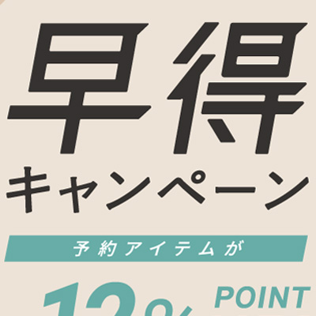
- シンプルなバナー
- 傾きがあるだけで、広告内に動きを感じ取ることができます（この場合、右から左に動いているように）
- Illustratorの「シアーツール」の使い方
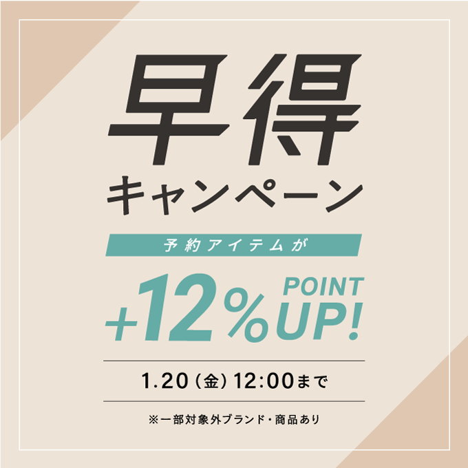 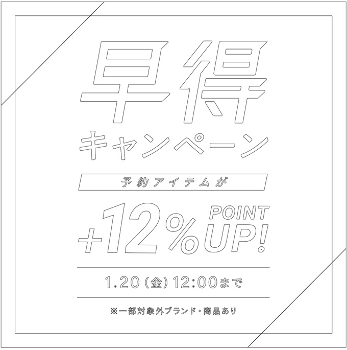
シアーツール
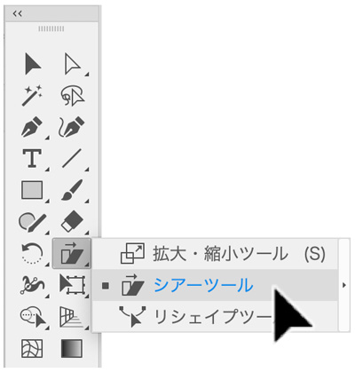
- 「シアーツール」を選択
- 「基準点」をクリック後、Shiftキーを押しながら水平に倒す
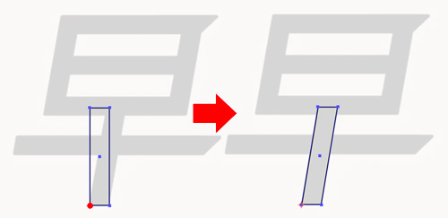
- 一度傾けたあとに「シアーツール」をダブルクリックすると、以下のように傾けた数値が確認できます
- この数値を覚えておいて他の傾けたい場合にも、この数値を利用します
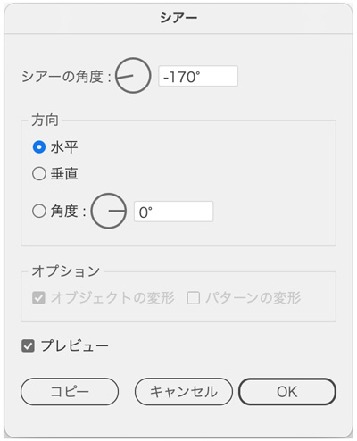
- 長方形の長さ・太さの微調整は「ダイレクト選択ツール」でおこないます
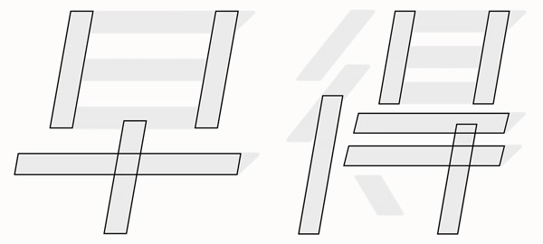
- 横の長方形を揃えるときには、必ず整列「キーオブジェクト」に揃えるを実行
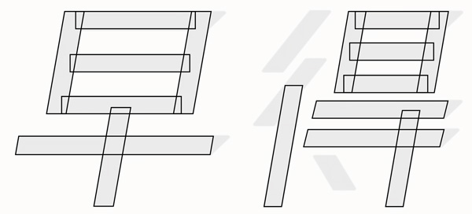
- 他の長方形も追加する
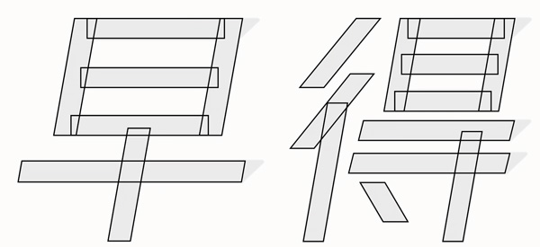
- 「早」と「得」に「アンカーポイントの追加ツール」で、各ポイントをクリックしておく
- 「ダイレクト選択ツール」で移動したいポイントを選択
- 最後の移動したいポイントは、「押しながら移動」します
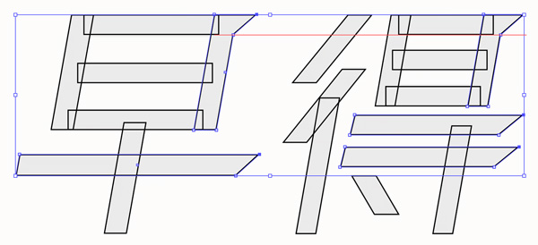
- 文字は、入力後に必要があれば「シアーツール」で傾けます
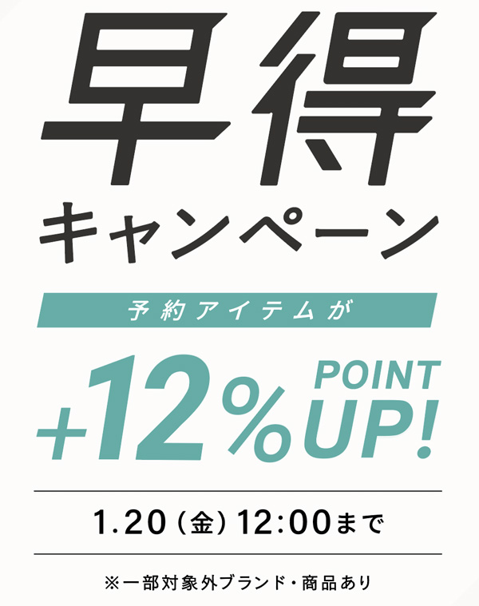
背景の作り方
- 正方形を描画
- 「オブジェクト」メニュー → 「パス」 → 「パスのオフセット」で内側の正方形を作り「塗り：なし、線色：白」にします
- 内側の線をロック後、背景の正方形をパスファインダー「分割」後、色をつけます
- 文字の部分も表示させて完成
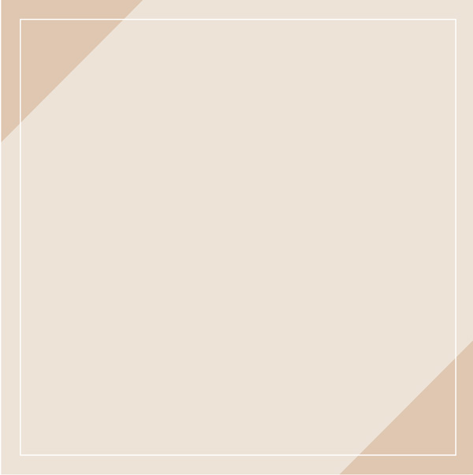